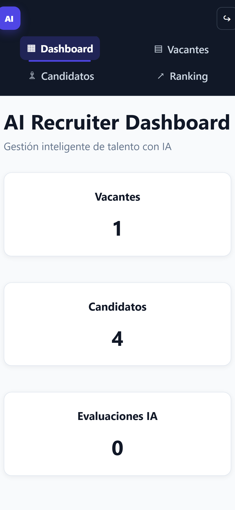
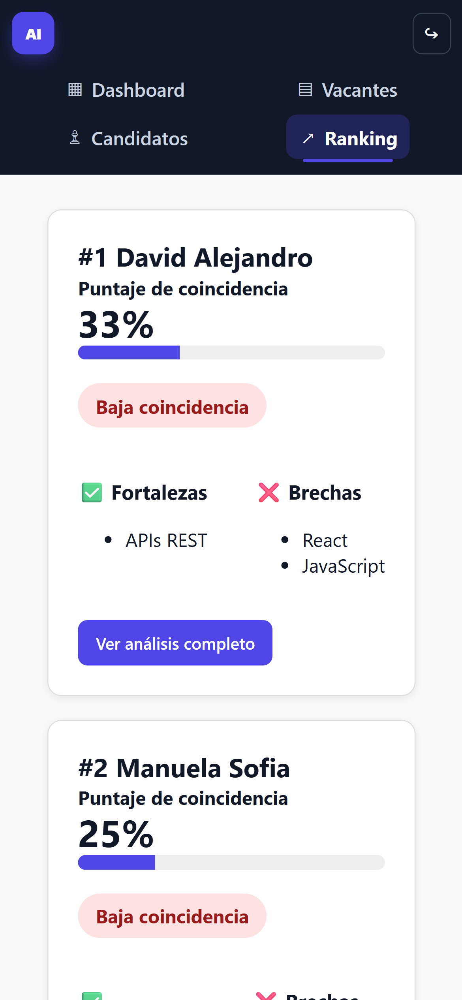
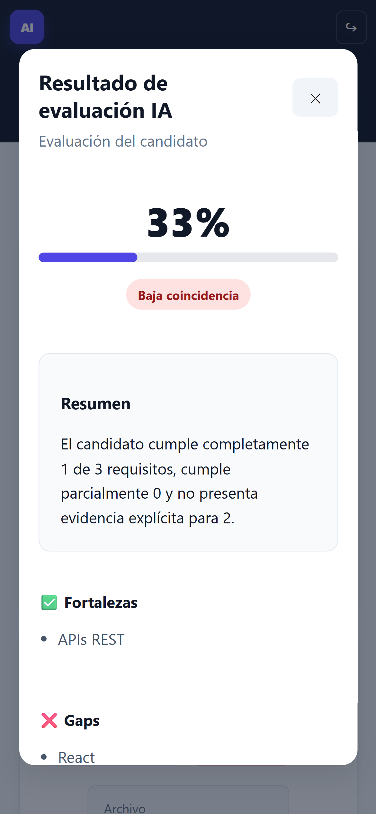
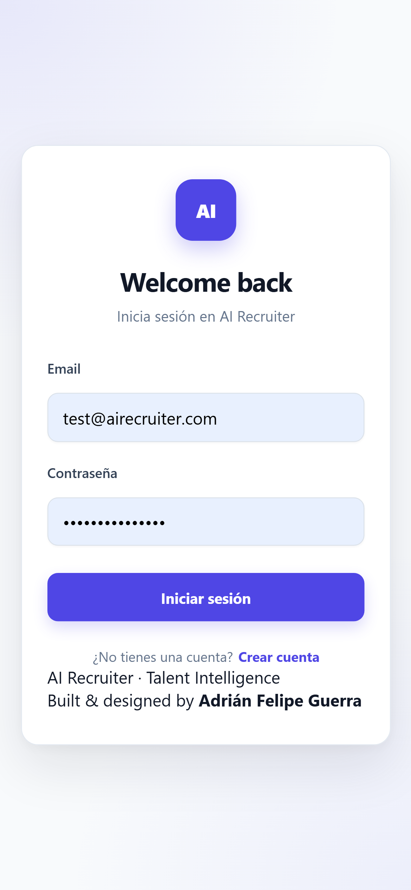

Combino arquitectura, código y visión de negocio para llevar una idea desde el primer boceto hasta producción.
AG
Adrián Felipe GuerraFull-stack · AWS · Generative AI
Bogotá, Colombia · Disponible para nuevos retos
Desarrollador full stack especializado en AWS. Convierto problemas complejos en productos claros, seguros y escalables, desde la interfaz hasta la arquitectura.
01 · Perfil
Soy desarrollador full stack con foco en soluciones cloud, inteligencia artificial y datos. Me interesa la tecnología cuando resuelve un problema real y se traduce en una experiencia simple para quien la usa.
Combino arquitectura, código y visión de negocio para llevar una idea desde el primer boceto hasta producción.
Frontend, APIs, datos, seguridad, automatización y despliegue.
Arquitecturas escalables en AWS con foco en seguridad y costos.
LLMs, RAG y automatización convertidos en flujos útiles.
02 · Proyecto destacado
Una plataforma que analiza hojas de vida, comprende los requisitos de una vacante y genera evaluaciones explicables, rankings y hallazgos accionables para acelerar la toma de decisiones.




Revisar perfiles manualmente consume tiempo y hace difícil comparar candidatos con criterios consistentes.
Un flujo RAG que extrae contexto del CV, lo contrasta con la vacante y devuelve evidencia comprensible.
Una experiencia responsive que centraliza candidatos, evaluaciones y decisiones en un solo producto.
Arquitectura
Frontend y backend se ejecutan en contenedores independientes sobre Fargate, detrás de un único Application Load Balancer. La capa de IA se integra con Amazon Bedrock y Knowledge Bases.
03 · Certificaciones
Una base sólida en arquitectura, desarrollo y fundamentos cloud, complementada con formación práctica en desarrollo web.
Desarrollo, despliegue y troubleshooting de aplicaciones en AWS.
Ver credencial Amazon Web ServicesDiseño de arquitecturas seguras, resilientes y optimizadas.
Ver credencial Amazon Web ServicesFundamentos cloud, seguridad, costos y servicios esenciales.
Ver credencial04 · Stack
No colecciono tecnologías: selecciono las adecuadas para diseñar, entregar y operar una solución con claridad.
Diseño, seguridad, observabilidad y optimización de costos en AWS.
APIs robustas y flujos inteligentes con contexto, evidencia y datos.
Interfaces accesibles, responsivas y enfocadas en tareas reales.
Análisis, visualización y automatización del camino hasta producción.
05 · Contacto
Estoy abierto a oportunidades en desarrollo full stack, cloud e inteligencia artificial aplicada.